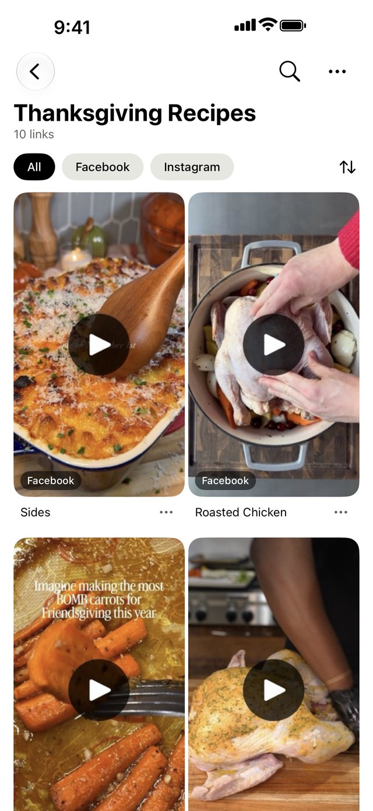
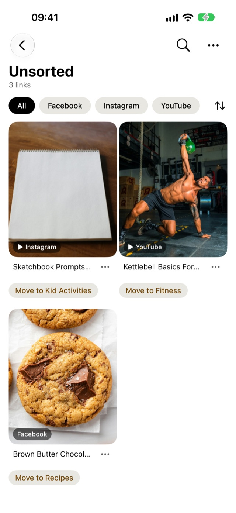
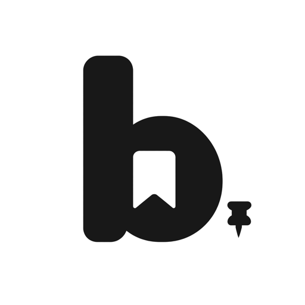

Save from any app.
Tap Share, choose Bulletn, done.

Works in TikTok, Instagram, YouTube, Facebook, Pinterest, Safari and any app with a Share button. Pick a folder yourself or let Bulletn sort it for you.
You save a recipe, a workout, a trip idea. Then it disappears into a saved tab, and when you need it, it is gone. Bulletn puts every link you save in one place, sorted into the right folder. It is private, and there is no account to make.
Tap Share, choose Bulletn, done.
Works in TikTok, Instagram, YouTube, Facebook, Pinterest, Safari and any app with a Share button. Pick a folder yourself or let Bulletn sort it for you.

Bulletn's AI reads the title, caption and link and puts each save in the folder that fits. When nothing fits, it suggests a new one. You can always move it.
When Bulletn is not sure, the save waits in Unsorted with a one tap suggestion.

Each save in Unsorted shows one suggested folder. Tap it and the save moves there. You can move any save yourself, any time.
Search by title, note or folder.
Search covers all your saves from every app. Folders show your latest saves as photo tiles. Pin the folders you use most.
Friends open it in their browser and see every save, even without Bulletn.

The folder travels inside the link. Nothing is uploaded. If they have Bulletn installed, they can add it in one tap.
Add a note to any save from the Share sheet. Set a reminder so a recipe or workout comes back when you want it.
A note helps you remember why you saved it. You can add a note or a reminder as you save.
No sign up, no email, no password.
No ads, no analytics and no tracking in the app.
You can turn it off any time in Settings.
Your saved links, notes and folders are stored there.
Nothing is uploaded.
Only the details needed to pick a folder are sent to sort it. The server does not store your link.
Subscriptions renew automatically unless cancelled at least 24 hours before the period ends. Manage or cancel any time in Settings.
Bulletn is free to download and new installs get 10 free saves. Bulletn Pro gives you unlimited saves for $0.99 a week, $2.99 a month or $14.99 a year.
Any app with a Share button, including TikTok, Instagram, YouTube, Facebook, Pinterest and Safari. Tap Share and pick Bulletn.
No. There is nothing to sign up for.
Yes. Your saves stay on your iPhone. Bulletn has no ads, no analytics and no tracking. AI sorting asks for your consent first, can be turned off in Settings, and the server does not store your link. Read the privacy policy.
Yes. The link opens a web page listing the folder. If they have Bulletn installed, they can add it in one tap.
Yes. Bulletn Pro renews automatically. Cancel any time in the Settings app under your name, then Subscriptions, at least 24 hours before the period ends.
Not yet. Bulletn is iPhone only.
More questions? Email get.bulletn@outlook.com

Free to download. No account needed.
Download on the App Store